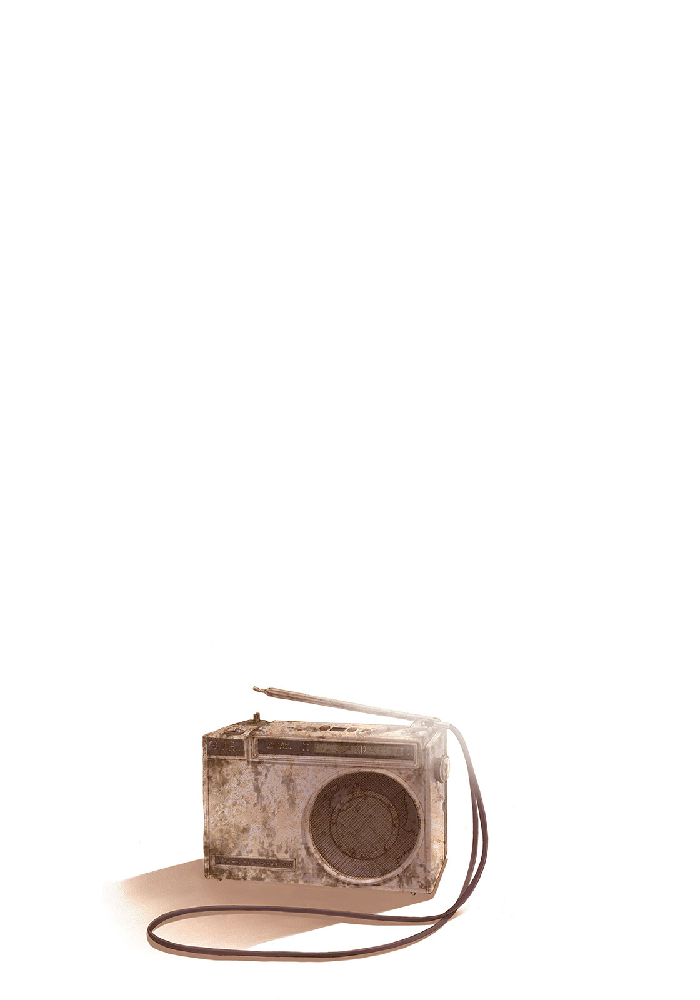

| キーリ 何度でも ～Kiele 14 years old～ (電撃文庫) | |
| 壁井 ユカコ | |
| (2013) | |
本書（電子版）に掲載されているコンテンツ（ソフトウェア／プログラム／データ／情報を含む）の著作権およびその他の権利は、すべて株式会社アスキー・メディアワークスおよび正当な権利を有する第三者に帰属しています。
法律の定めがある場合または権利者の明示的な承諾がある場合を除き、これらのコンテンツを複製・転載、改変・編集、翻案・翻訳、放送・出版、公衆送信（送信可能化を含む）・再配信、販売・頒布、貸与等に使用することはできません。
「何度でも ～Kiele 14 years old～」
朝、目が覚めるとキーリは真っ先に窓の外を見おろした。
昨夜のカーニバルの賑 わいが嘘のようだった。きらびやかな電飾の数々も、あんなに大勢ひしめいていた見物客たちも、惑星中の様々な物を見せてくれる露店や見世物小屋も、鳴り物を掻 き鳴らして練り歩く芸人一座の行列も......まるでひと晩限りの夢だったかのように消えてしまっていた。朝方の白んだ風がメインストリートに散在するゴミを転がしていく。
『やーっと静かになったおかげで落ち着いて眠れたぜ』
窓辺に置かれたラジオが『くあー』とあくびを漏らした。
「夜だけなんだよ、ここのカーニバルは。お前が寝てるうちに全部引きあげたよ」
窓ガラスに両手を張りつけてしょんぼりしていると、素っ気ない声が背中に聞こえた。すっかり出発の支度を調えた、というか上着と靴を脱いだ程度でもともと旅支度を崩した様子がないハーヴェイが隣のベッドの端で身をかがめてワークブーツの紐を結んでいる。バックパックもすでに傍 らに置かれていた。
「早起きだね、ハーヴェイ。いつ起きたの？」
と訊いたら「いつって？」と純粋に不思議そうな顔をされ、問い返されたことの意味がわからずキーリは言葉に詰まる。「下行ってるから」とハーヴェイはバックパックを片方の肩にだらりと引っかけて部屋をでていった。
なんだろう......微妙に拍子抜けした気分になりつつキーリも支度を急いだ。昨夜カーニバルから宿に帰ってくるとき、何 故 かわからないけどちょっぴりハーヴェイが優しくなったような......気がしたのは、気のせいだったのかなあ。
ラジオを首にぶら下げてキーリが表の通りにでるとハーヴェイは煙草を吸って待っていた。砂塵を含んだ風が吹き、カーニバルの告知が描かれたビラがハーヴェイの長い脚にまといついて飛ばされていった。やはり昨夜の出来事が嘘のようにメインストリートは閑散としており、まるでうち捨てられたゴーストタウンのようだった。
キーリに気づくとハーヴェイは「じゃあ行くか」と吸い殻を足もとに落とした。
『火には気をつけろよ。風が強いからな』
ラジオに注意されてワークブーツの底でしっかりと火を揉み消し、どっちにしても結局ポイ捨てしているわけなので正直なんの免罪符にもなってないんだけどそれで満足そうに頷いて歩きだす。拾おうかどうかキーリが迷っているうちにバックパックを背負った長身痩 躯 の後ろ姿がすたすたと遠ざかってしまう。
うーん......やっぱりどこも優しくなってないかな、と確信を深めながらキーリは肩掛け鞄を腰の後ろで揺らして小走りで追いかけた。
みぞおちに小さな痛みを覚え、空腹だったことを思いだした。昨夜のうちに朝ご飯になるものを買っておけばよかった。朝になったらお店の姿までまったくなくなってしまうなんて思っていなかったから。
どこかに寄ってくれるかなと期待しながら歩いていたが、駅が近づいてもハーヴェイが寄り道をしそうな様子はなかった。このままなにも調達しないで列車に乗っちゃったら次の駅まで何時間も、下手したら半日以上我慢しなくちゃいけないんじゃないかと不安になってくる。「ハ、」と何度か呼びとめようとしたけれど結局声をあげられなかった。上着のポケットに突っ込まれているハーヴェイの手につい物欲しげな目を向けながら息を切らせてついていく。昨夜帰るときに手を繋いでくれたのも、あれも夢だったんじゃないかという気が今はしていた。泡のようにはじけて消えてしまったカーニバルと一緒に、朝になったら昨夜のことが全部なかったことになって、もとの素っ気ないものに戻ってしまった。
すこしだけ泣きたくなって、いつしかとぼとぼした足取りになっていた。
『ハーヴィー！ おい、ハーヴィー！』
胸もとでラジオがノイズ混じりのがなり声をあげた。
「ハーヴェ......」
と、いつものように渋 面 で訂正しながらハーヴェイが振り返った途端「あっ？」と、なにかに気づいた顔になり、舌打ちをして大股で戻ってきた。
「お前なあ......」
頭の上でうんざりしたような溜め息をつかれてキーリは身を縮こめた。
「言えよ」
と、ひと言言われた。
亀の子みたいに首を引っ込めつつキーリは訝 しんでそうっと視線をあげる。苦虫を噛み潰したような顔で後ろ頭に手をやってぐしゃぐしゃと掻きまわしているハーヴェイの、あまりちゃんとしていない赤 銅 色の髪があっという間に乱れていく。
「ゆっくり歩いて欲しかったら、言えよ。ちゃんとそうするから」
思いも寄らなかった言葉をかけられた。
「いや、ちゃんとそうできるかは約束できないけど、気にはするから。言われても俺すぐ忘れるかもしれないけど、そしたらまた言え。何度でも言え。俺がそれで気を悪くするとかいうことは、ないから。言っとくけど俺からは気づかないからな？」
『開きなおるんじゃねえ。気づけよ』ノイズに乗せてラジオが突っ込む。
「俺とこいつじゃ違うだろ、いろいろ、機能が。ってのも変な言い方だけど......」妙にむにゃむにゃした言い方になり、うなだれていっそう後ろ髪をぐしゃぐしゃにするハーヴェイの顔をキーリは目を丸くして見あげてから、
「じゃあっ、あの、ぅ......」
最初勢いよく言いかけたものの尻すぼみになった。
「ん？」
とハーヴェイがまばたきをした。
「あの......今、じゃあ、今言ってもいい？」
「なんだよ？ 言えって、だから」
生真面目に居住まいを正してハーヴェイが訊き返してくる。
ぐう～。
と、タイミングよくお腹の虫が鳴った。
『おおっ？ 俺の屁じゃねえぞ？』ラジオが親父臭漂うリアクションをするのでキーリは内心で悲鳴をあげて「お、おならじゃないもんっ。お腹が鳴ったんだよっ」顔を真っ赤にしつつごつんと筐 体 を叩いておいて、上目遣いにハーヴェイの顔を見あげた。
「お、お腹......すかない......？」
ハーヴェイが絶句して目を見開いた。どう見てもこれは......言われるまで気づかなかった、という顔だった。ああ、本気でまったく意識になかったんだ。口にださずにぐずぐずしてるだけでどこかに立ち寄ってくれるわけがない。
「......言えよ。もっと早く」
溜め息をつかれた。気を悪くされたわけでも面倒くさがられたわけでもなさそうで、本当に単に、困った、という心の声が聞こえてきそうだった。
「......うん。これからは言うね」
「何度でも言えよ？ 俺が忘れてたら」
「うん。言う。何度でも、言うよ」
頷いたとき、さっきとは違う気持ちで泣きそうになって胸の前で鞄のストラップをぎゅっと握った。......「これからも」「何度でも」言えるくらいの時間、ハーヴェイは自分と一緒にいるつもりなんだって、少なくとも今のところは保証してもらえたように思えて。
「オーケイ」
ハーヴェイが薄く笑った。どことなく子どもっぽい、はにかんだような表情がちらりと覗いた。
「発車までまだちょっとあるな......急いでなにか食えるとこ探すか」
と、前に向きなおって歩きだす。言ったそばから歩調が速くなるので『おい、ハーヴィー』とラジオが呆れてノイズを飛ばすとぎくりと肩が揺れ、「へいへい」という返事とともにペースがゆるむ。このぶんだと「何度でも」どころか「何十回でも」言い続ける必要があるんじゃないかとさっそく若干心配になってきつつキーリは急いであとを追う。
『まあそんなに心配するな』
胸もとでラジオが囁いた。
『ちゃんと変わってるからよ。あいつにしては短期間で』
「どうして？ どうしてそう思うの兵長？」
思わずキーリは食いつくように訊き返した。昨夜感じた小さな「変化」をどうしてもはっきりした手応えにしたくて。
『気づいてねえか？ あいつ自身も絶対自覚してねえが......おまえの呼び方が変わっただろ』
「......え？」
一瞬だけ考えてから、すぐにキーリも思い至った。
言われてみれば、ほんの数日前、イースタベリを出発したばかりのときのハーヴェイはキーリになんて声をかけてた？──「あんた」だ。いつそれが変わったんだろう？ そう、昨夜、カーニバルから帰るときには──「お前」になってた。
ハーヴェイにとって「あんた」と「お前」がどう違うのかは、わからないけど......ハーヴェイの中でキーリの振り分け先が変わったんだろうか。「これからも」「何度でも」を、許してもいい場所に......。おとついよりも、昨日よりも、すこしだけ内側に。
またしてもハーヴェイの歩調が速くなりかけていて、『おい』とラジオが苦言を言いかける。キーリはラジオのスピーカーを手で押さえた。
今はもう臆さずに、思い切って明るい声で、自分からその背に呼びかけた。
「ハーヴェイ！」
これからも、何度でも──何十回でも、何百回でも、何千回でも彼の名前を呼ぶことができるのならば、何万回、何億回祈ったっていい。

電撃文庫
キーリ
何 度 でも ～Kiele 14 years old～
壁 井 ユカコ
二〇十三年八月八日 配信
初出 電撃文庫MAGAZINE Vol.32（二〇十三年六月）
発行者 塚田正晃
発行所 株式会社 アスキー・メディアワークス
〒一〇二─八五八四 東京都千代田区富士見一─八─十九
(C)2013 YUKAKO KABEI/ASCII MEDIA WORKS
本書（電子版）に掲載されているコンテンツ（ソフトウェア／プログラム／データ／情報を含む）の著作権およびその他の権利は、すべて株式会社アスキー・メディアワークスおよび正当な権利を有する第三者に帰属しています。
法律の定めがある場合または権利者の明示的な承諾がある場合を除き、これらのコンテンツを複製・転載、改変・編集、翻案・翻訳、放送・出版、公衆送信（送信可能化を含む）・再配信、販売・頒布、貸与等に使用することはできません。